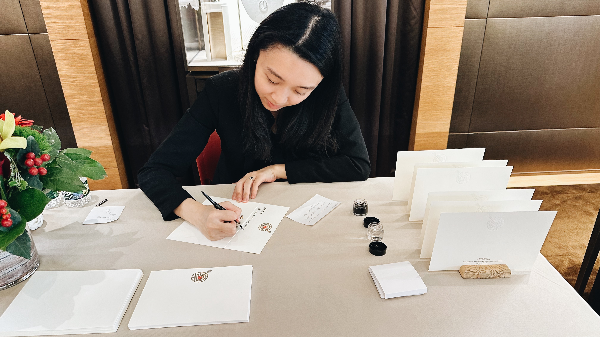
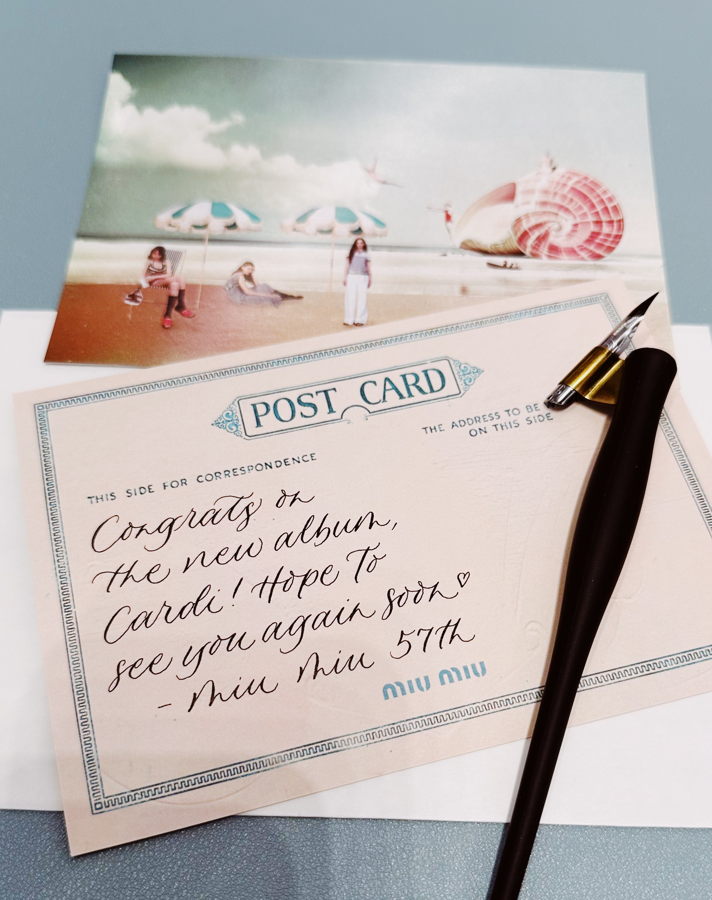

Bring calligraphy to your next event
With live personalization, guests can engage, observe, and leave with something created just for them. Each piece is completed by hand in real time. The process itself becomes part of the experience—quietly drawing attention through craftsmanship and detail.